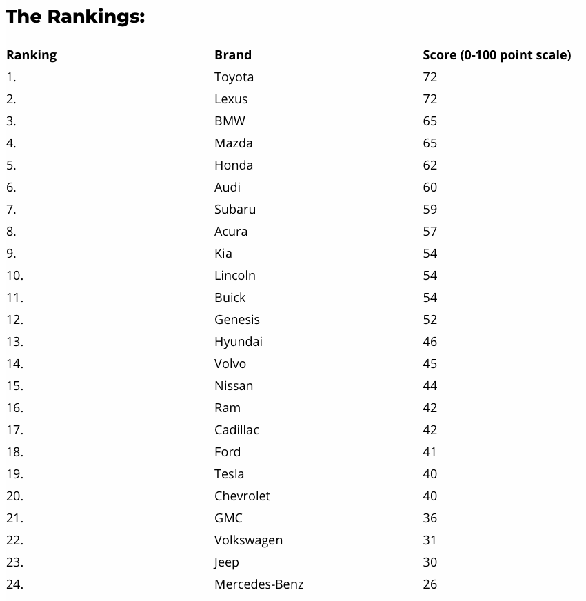

Since we have to start somewhere we will be using "dashboard-light" as the main source and compare its data to other sources like "vehiclehistory", "jdpower", "consumerreports", and other sources.
As we can see in these lists Toyota, Lexus, Honda, Mazda, Acura, and other Japanese car brands always make it to the top 5 of the car brands. After looking at these brands, we can pick from the top 5 and go further from there.
Lets break down each of the top 5 makes:


Because we are trying to save on fuel as much as we can we will only need car body style of sedan, coupe, or hatchback that is subcompact, compact, midsize, or fullsize. When it comes to reliability, Toyota has built a reputation as one of the top automotive brands over decades. According to consumer reports and surveys, Toyota vehicles consistently rank among the longest-lasting cars on the road.


Subcompact cars are a smart choice for college students who want an ultra-affordable and efficient commuter car.


Compact cars are a good choice for college students because they provide the best balance of price, reliability, and features.


Midsize cars offer college students a nice compromise between compact and full-size models.


Full-size cars are not the most practical commute option for most college students. However, they can work well in certain situations.